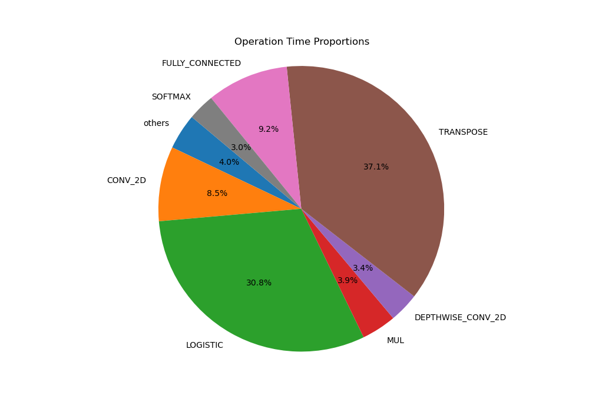
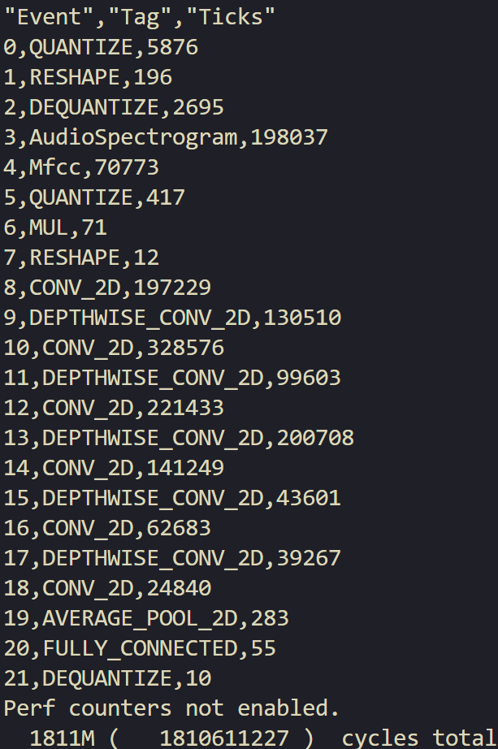

Lab 4 : Elementwise Unit#
Goal of this lab#
Introduction#
Modern models frequently utilize specialized activation functions that involve complex mathematical computations, such as exponentials, square roots, and reciprocals. Unlike simpler functions like ReLU, these sophisticated operations can become bottlenecks during model inference. In this lab, we will design an element-wise unit specifically for enhancing the inference speed of the Logistic and Softmax functions in the MobileViT model.
Porting and Profiling the Models - 20%#
Porting the New Models - 10%#
In this lab, we will provide you two models:
Logistic Test Model
This model serves as a benchmark to verify the correctness of your design. In other words, your design should pass the golden test of this model in order to get the score.
MobileViT
This is the actual model we aim to accelerate. We will use this model to benchmark the performance of your design.
After downloading and unzipping the files, place the two model folders directly into the CFU-Playground/common/src/models directory.
Just like we did in lab 1, we should modify some files to add the new models:
CFU-Playground/common/src/models/models.c
#if defined(INCLUDE_MODEL_DS_CNN_STREAM_FE)
MENU_ITEM(AUTO_INC_CHAR, "Ds cnn stream fe", ds_cnn_stream_fe_menu),
#endif
// add cods below
#if defined(INCLUDE_MODEL_MOBILE_VIT_XXS)
MENU_ITEM(AUTO_INC_CHAR, "MobileViT xxs", mobileViT_xxs_menu),
#endif
#if defined(INCLUDE_MODEL_LOGISTIC)
MENU_ITEM(AUTO_INC_CHAR, "Logistic test", quant_logistic_model_menu),
#endif
CFU-Playground/common/src/tflite.cc
#ifdef INCLUDE_MODEL_DS_CNN_STREAM_FE
2048 * 1024,
#endif
// add codes below
#ifdef INCLUDE_MODEL_MOBILE_VIT_XXS
16384 * 1024,
#endif
#ifdef INCLUDE_MODEL_LOGISTIC
50 * 1024,
#endif
CFU-Playground/proj/<lab4 proj folder>/Makefile
DEFINES += INCLUDE_MODEL_MOBILE_VIT_XXS
DEFINES += INCLUDE_MODEL_LOGISTIC
Also, please follow this guide to add the new operations required by the MobileViT.
After completing these steps, you should be able to run the two new models and obtain the scores for this section.
Profiling the MobileViT - 10%#
After executing the MobileViT model, you may notice that the inference process is quite slow. Please analyze and compare the time consumed by each operation, with particular attention to the activation functions. You may present your analysis in any format, such as a table or a pie chart. Additionally, you have the option to use data with or without SIMD MAC acceleration.
Here is an example of a pie chart: 
{kind=link}
Hint
You can use either the perf counter or the ticks displayed in the results after execution as your data source. 
{kind=link}
Next, trace the code of the Logistic function to identify the complex mathematical computations involved, which may be contributing to the slow execution.
Make sure to present your findings to the TAs during the demo.
Hint
You can start tracing the code from this file, and the model will use the topmost overloaded Logistic(...) function:
CFU-Playground/third_party/tflite-micro/tensorflow/lite/kernels/internal/reference/integer_ops/logistic.h Then, you will find the mathematical computations are defined in:
CFU-Playground/third_party/tflite-micro/third_party/gemmlowp/fixedpoint/fixedpoint.h
Accelerating the Logistic Function - 60%#
Add the integer version of the Logistic function to your project.
$ cp \
../../third_party/tflite-micro/tensorflow/lite/kernels/internal/reference/integer_ops/logistic.h \
src/tensorflow/lite/kernels/internal/reference/integer_ops/logistic.h
Important
Add the sixth perf counter at the beginning and end of the topmost Logistic function within the logistic.h file in your project. This step is crucial for evaluating your score, so please ensure it is not overlooked.
inline void Logistic(int32_t input_zero_point, int32_t input_range_radius,
int32_t input_multiplier, int32_t input_left_shift,
int32_t input_size, const int8_t* input_data,
int8_t* output_data) {
// Integer bits must be in sync with Prepare() function.
perf_enable_counter(6);
...
perf_disable_counter(6);
}
Evaluation Criteria#
Attention
You will get 0% if you can’t pass the golden test of the Logistic Test Model.
TBD
Guide#
Note
You are not required to follow to the provided guide below. Instead, you are encouraged to use any method to accelerate model inference, provided that it passes the golden test of the Logistic Test Model.
First of all, it is essential to familiarize yourself with fixed-point arithmetic and the FixedPoint class defined in fixedpoint.h. The key components and functions you are likely to use within the FixedPoint class include kIntegerBits, FromRaw(), and raw(). Additionally, you may find the comments for the FixedPoint class in fixedpoint.h to be a useful reference.
After tracing the code, you may notice that the exponential and the reciprocal are the primary bottlenecks, so we can focus on accelerating these two operations in this function.
third_party/gemmlowp/fixedpoint/fixedpoint.h
// Returns logistic(x) = 1 / (1 + exp(-x)) for x > 0.
template <typename tRawType, int tIntegerBits>
FixedPoint<tRawType, 0> logistic_on_positive_values(
FixedPoint<tRawType, tIntegerBits> a) {
return one_over_one_plus_x_for_x_in_0_1(exp_on_negative_values(-a));
}
Software#
Below is an example of replacing the original software-computed exponential with the CFU operation:
template <typename tRawType, int tIntegerBits>
FixedPoint<tRawType, 0> exp_on_negative_values(
FixedPoint<tRawType, tIntegerBits> a) {
typedef FixedPoint<tRawType, 0> ResultF;
...
b = cfu_op0(0, 0, 0);
return b;
}
This is just a simple example. You should properly design your CFU op to pass the data needed for the hardware unit. Also, you should properly handle the conversion of FixedPoint and the tRawType using FromRaw() and raw().
Note
Given the symmetry of the Logistic function, it’s only necessary to consider either positive or negative inputs for the exponential computation, with the negative ones being simpler to manage.
Hardware#
As for the hardware unit section,